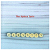
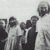

strange music page
overseas * * * rephlex
#初めて自分で買ったAphex Twin。何で(当時)プログレボーイがこんなの買ったのかはもう忘れましたけど。
最初あんまりピンと来なくて、未だにピンと来てないかも。買った頃は「ケンイシイの方がいーや」とか思ってましたから。
- Xtal
- Tha
- Pulsewidth
- Ageispolis
- i
- Green Calx
- Heliosphan
- We are the music makers
- Schottkey 7th Path
- Ptolemy
- Hedphelym
- Delphium
- Actium
SONY RECORDS: SRCS-7349 (1993.5.21)(original released 1992.9.1 - R & S RECORDS)
#1,7は"On EP"から、2,5,8は"Donkey Rhubarb EP"からで、残りは"Ventolin EP"からだそうです。
いわゆる編集盤です(R.D.James本人編集ですけど)。
相変わらず壊れた曲多いですけど、1曲目、"On"が好きです。綺麗なピアノとエゲツないリズムのからみが面白いかな。あと8曲目のPhilip Glass(アメリカの現代音楽の人)っつーのも。なんか映画音楽みたいな感じで、でもちょっとテクノでヘン。
ちなみに弟の持ち物。勝手に借りて聴いてます。(1999.9.3)
- On
- Pancake Lizard
- Ventolin (Crowsmangegus Mix Edit)
- Ventolin (Cylob Mix)
- Donkey Rhubarb
- Ventolin (Deep Gong Mix)
- 73 Yips
- Icct Hedral (Philip Glass Orchestration)
- Ventolin (Marazavose Mix Edit)
- Ventolin (Asthma Beats Mix)
- Ventolin (Carharrack Mix)
- Respect List
WARNER MUSIC JAPAN: WPCR-929 (original release 1993/1995 - WARP/SIRE)
#弟所有物、Aphex Twinの初期....R&S時代のシングル集です。
Ambient Worksよりまえのほとんど無名時代の音源と思いますけど、やっぱクオリティは高いですね、特に1曲目"Digeridoo"。オーストラリアの民族楽器をモチーフにした曲みたいですけど偏執狂的なハードコアテクノ(でいいのかな？)、持続音がとてもキモチ良いです。
関係無いけどウチの弟、最近俺よりマニアになってきたような.....(2000.8.24)

- Digeridoo
- Flaphead
- Phloam
- Isopropanol
- Polynomial-C
- Tamphex (Hedqhuq Mix)
- Phlange Phace
- Dodeccaheedron
- Analogue Bubblebath I
- Metapharstic
- We have arrived (Aphex Twin QQT Mix)
- We have arrived (Aphex Twin TTQ Mix)
- Digeridoo (Live in Cornwall, 1990)
SONY RECORDS: SRCS-7569 (original release 1992/1995 - R & S RECORDS)
#八王子の中古屋で、\800でした。大当たり、とてもかっこいいです。Aphex TwinはAmbient Worksしか聞いた事無かったんですけど、これの方がわかりやすい感じです、典型的なドラムンベースとか有るし。音色が気持ち良かったです。

- Come To Daddy, Pappy mix.
- Film.
- Come To Daddy, Little Lord Faulteroy mix.
- Bucephalus Bouncing Ball.
- To Cure A Weakling Child, Contour Regard
- Funny Little Man.
- Come To Daddy, Mummy mix.
- IZ-US
SIRE/WARP RECORDS: (1997)
- 4
- Cormish Acid
- PEEK 824545201
- Fingerbib
- Carn Marth
- To Cure A Wekling Child
- Goongumpas
- Yellow Calx
- Gril/Boy Song
- Logan Rock Witch
- Milkman
- INKEY$
- Girl/Boy (18 Snare Rush mix)
- Beetles
- Girl/Boy (Redruth mix)
#ホリコシ宅より、会社の廃棄パソコンと引き換えに押収。「イマイチだよ」との彼の言葉通り、イマイチでした。まぁ好きなトラックも有るんですけど...まぁ、AFX好きなら買ってもよろしかな？(2000.4.8)
- 215061
- 1993841
- 0180871R
- 942937
- 0180871L
- 000890569
- 55278037732581
- (CAT 00897-AA1)
- (CAT 00897-A1)
- AFX 6/B
- (CD Only Track #1)
- (CD Only Track #2)
- (CAT 00897-A2)
SONY MUSIC ENTERTAINMENT: SRCS-8527 (original release 1993 - REPHLEX)
#アルバムとしては Richard D.James Album 以来で...5年振りみたいですね。
2枚組でけっこうなボリュームですけど、ぜんぜん統一感無いです。相変わらずのキチガイドラムンベースな曲とかの間に、すごく静かで綺麗なピアノの曲とか挟まってて。なんていうか、以前にもまして内面的な気がしました、垂れ流しの大排泄物って感じかな？ (けなしてるつもり無いですよ、一応。
www.drukqs.netで音聴けます。(2001.10.13)

- jynweythek
- vordhosbn
- kladfvgbling micshk
- omgyjya switch7
- strotha tynhe
- gwely mernans
- bbydhyonchord
- cock/ver 10
- avril 14th
- mt.saint michael + saint.michaels mount
- gwarek2
- orban eq trx4
- aussosis
- hy a scullyas lyf a dhagrow
- kesson dalef
- 54cymru beats
- btoum-roumada
- lornaderek
- qkthr
- meltphace 6
- bit 4
- prep gwarlek 38
- father
- taking control
- petiatil cx htdui
- ruglen holon
- afx237 v7
- ziggomatic 17
- beskhu3epnm
- nanou2
WARNER MUSIC JAPAN: WPCR-11093/4 (2001.10.11 - WARP RECORDS)
#えーと、聴いたことあったんですけどCDで持ってなかったので、買いました。元住吉の中古屋で\1,200でした。テクノフュージョンっていうか...リズム気にしなければJaco Pastoriusとかに似てるかも、実際影響受けてるみたいだし。やっぱかっこいいです、でもBurnin' Treeはこのアルバムより昔の録音らしいですけど、更にスピード速いです。もうバカの領域です、一番好き。最新作はよくわからなかったなー。(1999.2.4)
- Coopers World
- Beep Street
- Rustic Raver
- Anirog D9
- Chin Hippy
- Papalon
- E8 Boogie
- Fat Controller
- Vic Acid
- Male Pill Part 13
- Rat/P's and Q's
- Rebes
- Lone Raver [Live in Chelmsford Mix]
- Fat Controller [G7000 Remix]
SONY MUSIC ENTERTAINMENT: SRCS-8260 (1997.4.16)
#そんなわけで、Burningn'n treeです。もーやりすぎな位の音、濃密。SPYMANIAというレーベル時代の音源です。WARPやRephlexから出てるアルバムより雑然としてて、未整理で魅力的。
- CENRAL LINE
-
- NUX VOMICA
- EVISCERATE
-
- MALE PILL 5
- SARCACID PARTS 1
- CONUMBER
-
- EVISCERATE (VERSION)
- TOAST FOR HARDY
- SARCACID PARTS 2
SONY MUSIC ENTERTAINMENT: SRCS-8459
#弟からの借り物です。最近はなんだか宅録ジャズみたいな事をやってて、あまり興味の無かったSquarepusherですが、このアルバムは昔のテクノ+フュージョンが戻ってきたような曲がけっこーあります。結構色々なタイプの曲が混在してますけど。昔の路線の曲は昔の方が格好良いような気がしちゃいますし、ちょっと毛色の変わった曲はあんまり面白く無いような気もしますし、この先どんななんでしょうね？
- The 'Eye
- Square Rave
- Time Borb
- Dedicated Loop
- Tomorrow World
- Cool Veil
- Schizm Track #1
- Freeway
- Snake Pass
- Yo
- Mind Rubbers
- Tesko
- Acid Tape Track
- 8 Bit Mix #1
- 8 Bit Mix #2
- Schizm Track #2 Mix
- Ceephax Mix (remix by Andy Jenkinson)
- Dead'n'Gowe, y'All (featuring FIR-Q)
SONY MUSIC ENTERTAINMENT/Associated Records: AICT-118 (1999.11.20 - WARP RECORDS)
#u-ziqのrephlexからの1枚目。クレジットにFrancis Naughtonって有るけど誰なんだろう...?
機材のクレジットが有って、YAMAHA DX11,Roland D50,SONY Betamaxなんてチープな名前が載ってます、しかもFostex 4-track recorderだそうで.....音楽は機材じゃ無いことを気合で証明してます。機材グレードアップした最近のu-ziqのアルバムよりこっちの方が面白く聞こえるのは私だけでしょーか？ (2000.12.5)
- Tango N'Vectif
- Burnt Sienna
- Auqeam
- u-ziq Theme
- Xenith Filigree Anus
- Phragmal Synthesis
- Beatnik #2
- Swan Vesta
- Isope
- Vibes
- The Sonic Fox
- Whale Soup
- Die Zweite Heimat
- Phi 1700 [u/v]
- Michael Paradinas
- Francis Naughton
REPHLEX: CAT-013-CD (1993)
#最近結構はまっているu-ziqのREPHLEXからの2枚目です。なんだかCD再発される前は結構レアな物だったらしいですね、"Lunatic Harness"とかに比べると未整理な要素がそのまんまのっかってます。実験作みたいな雰囲気もありますけど。(2000.6.4)
- Hector's house
- Commemorative pasta
- Gob bots
- The wheel
- 27
- Metal thing #3
- Twangle frent
- Make it funky
- Zombies
- Riostand
- Organic tomat yoghurt
- Sick porter
- Sick porter
- Dance 2
- Nettle + pralines
- Ethereal murmurings
SONY MUSIC ENTERTAINMENT: SRCS-8558/8559 (original release 1994 - REPHLEX)
#えーとコレ何枚目だろう？Lunatic Harnessの前かな？
REPHLEX時代よりもちょっと機材が増えてゴーカになったかな？ 音色はちょっとフツーになったんですけど、中身はやっぱり壊れテクノだったりするんですけど。何か唐突に一箇所だけハイハットの音量が上がったり、不可解だったり不安な感じ。
なんだかんだ言って結構好きだったりするんですけど。
- Roy Castle
- Within A Sound
- Old Fun #1
- Dauphine
- Funky Pipeoleaner
- Iced Jem
- Phiesope
- Mr.Angry
- Melancho
- Pine Effect
- Probiematic
- Green Crumble
VIRGIN RECORDS/ASTRALWERKS: ASW-6155 (1995)
#スゲー良かったです。基本線、Aphex Twinみたいな「ヲタク系テクノ」なんですけど、Aphex Twinよりも好みです。アイディア一発勝負みたいな曲も多いんですけど、なんていうか叙景的(ハズカシイ表現かも)な綺麗な音。地元の中古屋で\600でした、大アタリ。(2000.6.1)
- Brace Yourself Jason
- Hasty Boom Alert
- Mushroom Compost
- Blainville
- Lunatic Harness
- Approaching Menace
- My Little Beautiful
- Secret Stair Pt.1
- Secret Stair Pt.2
- Wannabe
- Catkin and Teasel
- London
- Mindwinter Log
#弟からの借り物.....ちょっとイマイチかなぁ？
いわゆるテクノミュージックから抜け出そうとしたような曲が多いです。ストリングスの多用とか、ボーカル曲とか。
途中まで書いてそのままアップしちゃったみたい、今聴き直したらそんな悪く無かったです。やっぱしアイディア一発みたいな曲多いけどさ。その一発がうまーくハマルととても気持ちイイです、個人的には"burst your arm"ウネウネした音が良かったです。(2000.10.21)
- scaling
- the hwicci song
- autumn acid
- slice
- carpet muncher
- the motorbike track
- mentim
- the fear
- gruber's mandolin
- world of leather
- scrape
- 56
- burst your arm
- goodbye, goodbye
- he fear (remixed) - bonus track
- morning frolic - bonus track
東芝EMI/VIRGIN JAPAN: VJCP-68155 (1999.8.6)
#kid spatula = Mike Paradinas = u-ziq かな？マイクパラディナスの別名義でのCD、自身のレーベルから。
u-ziqよりもロックっぽい.....と言うかバカっぽいです。間抜けなボーカルトラック載せてみたり、無茶な音色変化してみたりとか、妙にハッピーな感じだったりとか。躁状態ですかね？ 壊れエレクトロ、マヌケ入りかな。
- dirtwah
- come on board
- nordy
- hard love
- new school bikes
- epic blusta
- otdok
- xxx
- dancing demons
- milk bottle tops
- another fresh style
- manfright
- beaver
- snorkmalden
- jar jar binx
- qisope
- not the fear
- kid spatulet
- hill street blues
- full sunken breaks
Planet Mu Records: ZIQ010CD (2000)
#REPHLEXのコンピ。Aphexモドキも多いですけど、結構フツーのとかオシャレなのもあるんですね。
11曲目のVIBERT SIMMONDSって好きかも、この中では一番気になりました。
- The Gentle People/Journey
- Global Goon/Long Whiney
- Cylob/Rewind
- DMX Krew/The Glass Room
- D'Arcangelo/Diagram VII (80's mix)
- Bochum Welt/Fortune Green
- The Railway Raver/Keith's Trumpets
- Baby Ford/Normal (Helston Flora Remix By AFX)
- u-ziq/Swan Vesta
- Vulva/Happy Birdie! Sad Birdie!
- Vibert Simmonds/(This Can) Robotic
- Chaos A.D./Psultan (Squarepusher mix)
- Bogdan Raczynski/Death to the Natives
- Mike Dred + Peter Green/Kymera
- Leila/Don't Fall Asleep
- Ovuca/Afternoon Girl
REPHLEX: CAT-100-CD (2001)